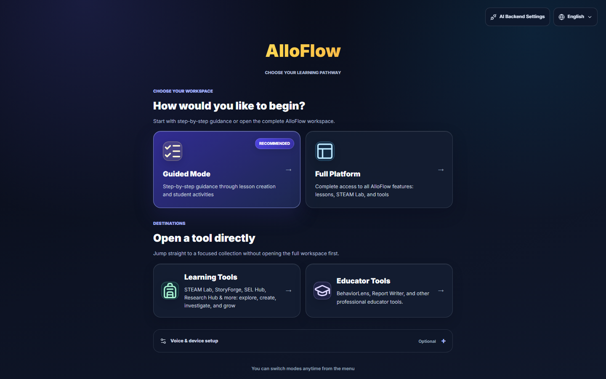
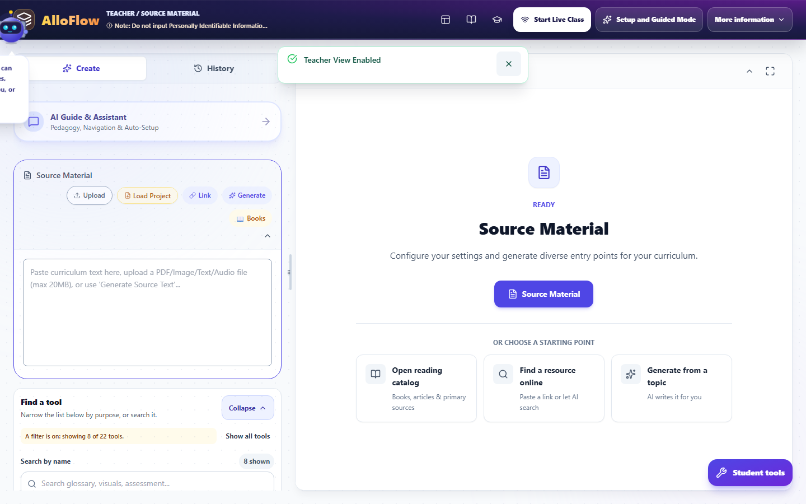
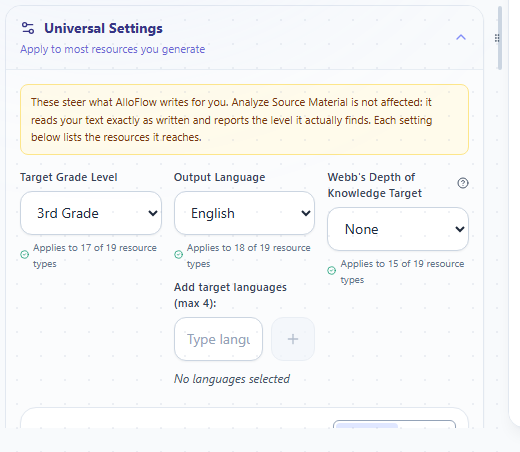
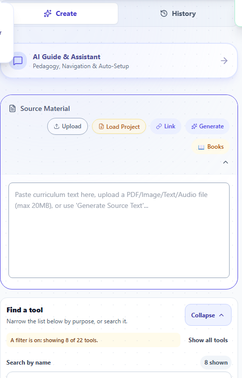
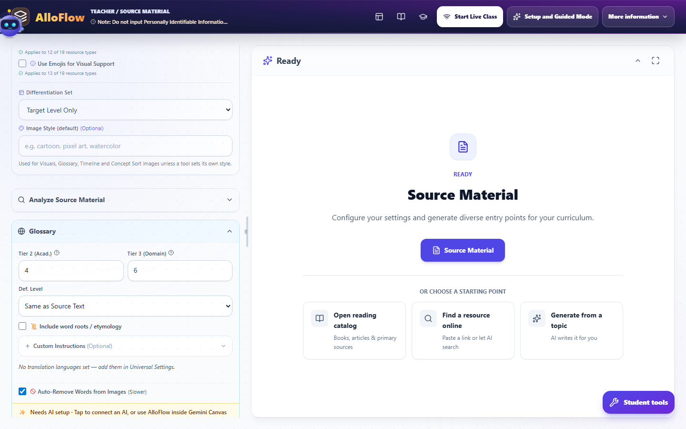
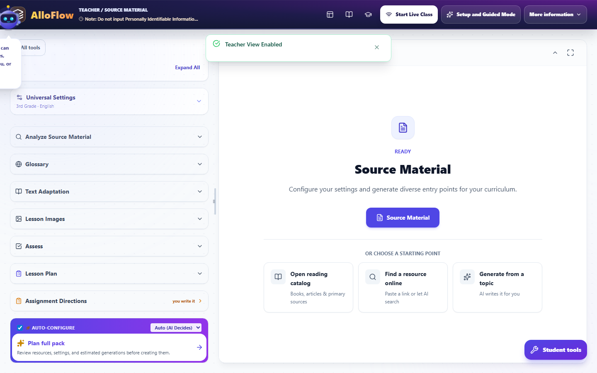
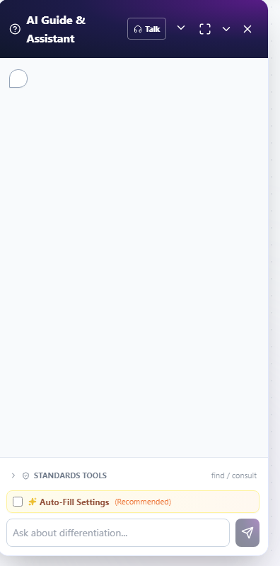
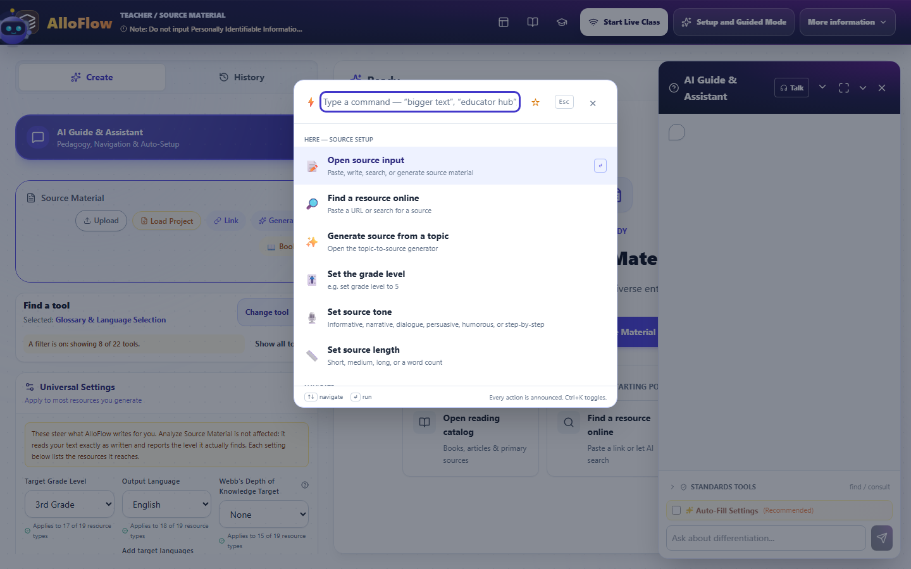

The workspace, part by part
The mechanical tour: every region of the screen, the header, finding tools, and the three ways to generate (one resource, full pack, Blueprint Mode).
- Best for
- Everyone
- Typical use
- 15 minutes
Search the guide
Type one or more words to search every chapter.
This is the mechanical tour. Other chapters explain what to make and why; this one explains where everything is, which control does what, and how the three ways of generating work differ. If you have ever opened AlloFlow and not been sure what you were looking at, start here and read straight through with the app open beside you.
Getting in: the Launch Pad
The first screen asks how you want to begin. It is not a settings page you have to get right, and nothing here is permanent.

Choose your workspace offers two doors into the same product:
- Guided Mode walks you through lesson creation one step at a time. It is marked Recommended because it is the shortest route to a finished resource on your first day.
- Full Platform opens the complete workspace at once: every tool, every setting, nothing hidden. The rest of this chapter describes this view, because it is the one with all the parts in it.
Open a tool directly skips the workspace entirely:
- Learning Tools goes straight to the STEAM Lab, StoryForge, SEL Hub, Research Hub and the rest.
- Educator Tools goes to the professional tools such as BehaviorLens and Report Writer, and to the Leadership Hub.
Two more things live on this screen. Voice and device setup is optional and can be left alone. Top right, AI Backend Settings is where an AI connection is configured, and the globe control sets the language. The footer says it plainly: you can switch modes any time from the menu, so a wrong first choice costs you nothing.
The two questions AlloFlow asks first
Choosing Full Platform brings up two short gates. Both are one-time, and the second is skippable.
Who is using this device? Student, Teacher, Parent, or Independent Learner. This is what decides whether you see teacher controls at all, so pick Teacher on your own machine.
Quick Start then offers four steps of global context, beginning with grade level. Every step has a SKIP control, and skipping is a legitimate choice: everything Quick Start sets can be set later in Universal Settings. If you are exploring rather than building, skip it and look around first.
The screen, in four regions

Once you are in, the screen is always the same four regions:
- The header strip across the top: where you are, and the things that apply to the whole session.
- The left column: source material, Universal Settings, the tool finder, and the list of tools. This is where you choose what to make.
- The centre: what you have generated, and the starting points when you have not generated anything yet.
- The AlloBot panel on the right, which opens when you ask for it.
Nothing moves between these regions. When a chapter tells you to "open Universal Settings", it means the left column, every time.
The left column has two tabs at the top, Create and History. Create is where you work; History is what you have already made this session. And at the bottom right of the screen sits Student tools, which is how you look at the same work the way a student would.
The header, control by control
Left to right:
- The AlloFlow mark, and beside it a breadcrumb reading something like TEACHER / SOURCE MATERIAL. That is your role and the part of the workspace you are in, which is the fastest way to confirm you are not accidentally in a student view.
- A standing note not to enter personally identifiable information. It is deliberately always visible rather than a dialog you dismiss once. Treat it as the rule it is.
- Icon buttons for the Documents menu, the reading catalog, Learning Tools, and Educator Tools. These are shortcuts to the same places the Launch Pad offers.
- Start Live Class for running a session with students in the room.
- Setup and Guided Mode to switch into the step-by-step flow without losing what you have.
- More information, which holds the rest. Opening it reveals a second bank of controls: Text, Voice, Translate, Documents, Assessment Center, AI, and the Tools, Learn and Bridge groups. Export, model diagnostics, Jump to Lesson Plan, Copy Link for Students and the Cloud Sync toggle all live in here. If you cannot find a control anywhere else, open this menu.
The header has two states, and this catches people out. What is described above is the collapsed header. Expand it and a second, much larger bank appears: the App Language selector, Text and Voice controls, Translate, Documents, Assessment Center, and the AI, Tools, Learn and Bridge groups.
It also carries a row of icon buttons that are easy to overlook and worth learning, because three of them are the fastest routes to help: the lightbulb holds messages you may have missed, ? turns on Help Mode, the map starts the guided tour, the sparkles reopens setup and Guided Mode, and the cloud toggles Cloud Sync. The tour and setup icons appear in teacher mode only.
So if a control is missing from the header, it is almost certainly in the expanded state rather than gone. Collapse returns you to the compact strip and reclaims vertical space on a small laptop, and Maximize View gives the centre column the whole window.
Changing the language, and the setting people mix up
There are two different language settings, they do different jobs, and confusing them is the single most common source of "why is this in the wrong language".
App Language is in the header. It changes the interface: buttons, menus, labels. Open it and you get a searchable list, your current language, and a Custom option if your language is not listed. Changing it may offer to regenerate the content you already have so it matches, and it warns you first, because unsaved changes to the current text can be lost in that regeneration.
Output and translation languages live in Universal Settings, not the header. These decide what language the resources you generate come out in, and which translations get attached. A glossary panel will tell you directly when none are set, with a line reading that no translation languages are set and pointing you to Universal Settings.
So: header for the language you read the app in, Universal Settings for the language students receive.
The left column: settings, then tools
Universal Settings

The header line reads Apply to most resources you generate, and the collapsed state summarises itself, for example 3rd Grade · English. That summary is worth glancing at before every generation.
Two ways to fill it in:
- AI Match infers settings from your source material and goal.
- Manual lets you set each one yourself.
Inside are grade level, output language and translations, whether to use emoji for visual support, a Differentiation Set (for instance Target Level Only), and a default Image Style used by Visuals, Glossary, Timeline and Concept Sort unless a tool sets its own.
The detail that makes this panel trustworthy is the small coverage note under many settings, reading something like Applies to 12 of 19 resource types. AlloFlow is telling you exactly how far a setting reaches rather than implying it governs everything.
These apply to new work only. Set them before you generate, not after.
Find a tool

Below the settings is the tool finder, and it has three ways to narrow a long list:
- Search by name in the search box, which prompts with examples such as glossary, visuals, assessment.
- Filter by purpose with the row of buttons: Recommended, Make accessible, Engage, Assess and deliver, All tools. When a filter is active the panel says so in words, reading something like A filter is on: showing 8 of 22 tools, with a count of how many are shown. This matters: if a tool you expected is missing, a filter is the usual reason, and the panel tells you rather than leaving you to guess.
- Show all tools clears the filter, and Expand All and Collapse open or close every tool panel at once.
The list underneath holds the resource tools: Analyze Source Material, Glossary, Text Adaptation, Word Sounds, Visual Organizer, Note-Taking Templates, Anchor Chart, Lesson Images, FAQ Generator, Writing Scaffolds, Activities, Interview Mode, Sequence Builder, Concept Sort, Document Analysis, Assess, Lesson Plan, Assignment Directions, and the entry points to the STEAM Lab and Adventure Mode.
Starting from a source
The centre column begins at Source Material, because most resources are generated from something. There are three routes, offered as cards:
- Open reading catalog for books, articles and primary sources.
- Find a resource online to paste a link or let AI search.
- Generate from a topic to have AI write the source text for you.
The same routes exist as a row of buttons on the Source Material card in the left column: Upload, Load Project, Link, Generate, and Books. Under them is a paste box that accepts curriculum text directly, or a PDF, image, text or audio file up to 20MB.
Once a source is in, Analyze Source Material reads it back to you, so you can check the AI understood it before you build eight resources on top of a misreading.
You do not always need a source. Some tools invent their own material. But when a tool warns that a step produced nothing, a missing source is the usual reason.
Making one resource

Click a tool in the left column and its panel expands in place. Every tool panel has the same shape:
- Options specific to that tool. The Glossary, for example, asks how many Tier 2 academic and Tier 3 domain words to pull, what reading level the definitions should sit at, and whether to include word roots and etymology.
- Custom Instructions (Optional), a free-text box for anything the options do not cover.
- Per-generation overrides where offered: Writing Tone, Content Length, Reading Level, and Webb's Depth of Knowledge. These override Universal Settings for this one resource without changing your defaults.
- The Generate button, always named for the tool: Generate Glossary.
Change tool swaps the open panel without collapsing everything and starting again.
Making a whole lesson at once: the full pack
The full pack is the "do it all" path. It generates a coordinated set of resources from one source in a single run.

It lives at the very bottom of the tool list, under an Auto-Configure card, which is easy to scroll past.
- The size selector on that card controls how much gets made. Auto (AI Decides) is the default, or choose Short (5), Standard (8), Deep (12), or All Tools.
- Auto-Configure itself fills in the per-tool settings for you rather than making you set each one.
- Plan full pack is the control to press first. It says what it does: review resources, settings, and estimated generations before creating them. In the review, you can add or remove resources, change each resource type, edit its instruction, and move it up or down. Read the updated estimate, because that number is your AI usage for the run.
- Generation impact separates new generations from existing resources that can be reused. Each row shows the grade and output-language versions it will make. A differentiated, multilingual quiz might show three grades by three languages as nine versions; an existing analysis of the same source can show Reuse and cost no new generation.
- Text access summary confirms whether an Adapted Text companion is included. The recommended policy preserves the primary/source text and omits adapted text by default. Choosing Include supplemental Adapted Text adds a companion; it does not designate that companion as a primary replacement or infer an IEP modification.
- Generate Full Resource Pack then runs it. The helper text names the shape of what you get: analysis, text, glossary, visuals, quiz and more.
The planner treats Analyze Source as one source-wide resource and suppresses exact duplicate rows. It prioritises resource types you do not have yet, while allowing purposeful variants of repeatable resources when their instructions or modes differ. Analysis stays before resources that depend on it, and Lesson Plan stays last so it can synthesize the resources that came before. Editing a reviewed row clears its old calculation; the reuse and variant matrix is checked again before generation.
The full pack is the fastest route from one text to a usable lesson set. It is also the easiest way to spend a lot of generations at once, which is exactly why the planner shows the exact matrix and estimate first.
Blueprint Mode: describe the lesson, approve the plan, then build
This is the most powerful path in the app and the least discoverable, because it lives inside AlloBot rather than on a button of its own.

How to turn it on. Open AI Guide and Assistant from the header to bring up the AlloBot panel on the right. Near the bottom, tick Auto-Fill Settings, marked Recommended. That toggle is what puts AlloBot into Blueprint Mode. Then describe what you are teaching in ordinary language.
What happens next. AlloBot tells you it is analysing context and designing a lesson blueprint, and it says up front that you will be able to review and change the plan before anything is generated. It then presents a Lesson Blueprint: an ordered list of the resources it proposes to build.
Reviewing and changing the plan. Nothing is generated yet, and this is the point of the whole feature.
- Type changes in plain language: "Add a quiz", "Change grade to 5th". AlloBot confirms with Blueprint updated and you can keep going.
- Edit Plan opens direct editing, with Add Resource Step to insert one and Done Editing to finish.
- Reorder by dragging, or use Move up and Move down, which exist so reordering does not require a mouse.
- What does this resource do? explains any step you do not recognise.
- Generation impact names the frozen audience grades and output languages, the number of new generations, and how many existing outputs will be reused. Each resource row shows its own new/reused version count. If you edit a type or instruction, the card says that this calculation will be refreshed before the run.
- Ask a question without touching the plan and it answers, leaving the blueprint unchanged.
Building it. Generate Plan starts the run. Blueprint uses the same source-aware reuse and grade-by-language matrix as Full Pack: an exact existing resource is linked into the lesson without another AI call, while a changed directive or explicit rebuild requests fresh work. A progress line reads Building, N of M steps finished. If you need to stop, Stop after this step finishes the step in progress and then halts: everything already finished is kept, and the remaining steps show a Rebuild control so you can run them one at a time later.
Two things worth knowing before you start. If there is no source text yet, AlloFlow warns that some resources may not generate and suggests adding or generating a source first. And previous plans are archived rather than discarded, so an earlier blueprint can be restored, though not while a plan is still generating.
The command palette and Help Mode
Two shortcuts do more work than anything else in this chapter.

Ctrl+K (Cmd+K on a Mac, or Ctrl+Shift+P) opens the command palette. Type what you want in ordinary words and it takes you there. It reports how many commands match, you can star the ones you use constantly, and Esc closes it.
? turns on Help Mode. With it on, click any button, panel or tool and AlloFlow explains that specific element in plain language. This is the fastest way to answer "what is this control" without leaving the screen you are on, and pressing Esc turns it back off.
Saving your work, and getting it out
Work lives on the device, so saving is something you do deliberately.
- Save Project writes the whole session to a file. You give it a name and AlloFlow adds the
.jsonextension. This is your backup and the way to move a lesson to another machine. - Load Project sits in the Source Material button row and reopens one you saved earlier.
- Export offers the output formats, including a finished copy to print or save as PDF, a blank worksheet version, and a teacher copy that includes answer keys and analyses.
- Copy Link for Students gives you the student route to what you have built.
If a lesson matters, save the project. Browser data clearing removes on-device work, and the project file is what survives it. Saving, loading, and managing storage covers the whole picture, including the recovery key and how to stop AlloFlow running out of room.
When no AI is connected
You will sometimes see a line on a tool panel reading Needs AI setup, offering to connect an AI or to use AlloFlow inside Gemini Canvas. Nothing is broken. AlloFlow separates the things that need a model from the things that do not.
Generation needs AI. Browsing tools, the STEAM Lab simulations, Universal Settings, saving and exporting, and everything you have already generated all keep working without it. If you are evaluating AlloFlow before your district has chosen a model, you can still see most of the product.
For the three ways to connect one, see Troubleshooting; for what leaves the device when you do, see Privacy and responsible AI.
Where to go next
Now that the screen makes sense, Prepare a lesson shows how to use it well, Universal Settings goes deeper on the settings panel, and AlloBot covers talking to the assistant beyond Blueprint Mode. Keep Quick reference beside you until the shortcuts are habit.